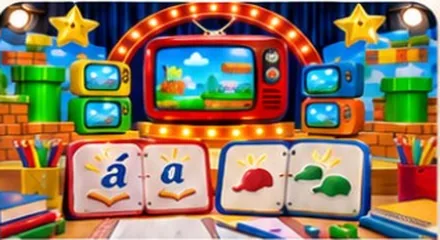
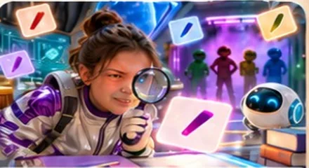
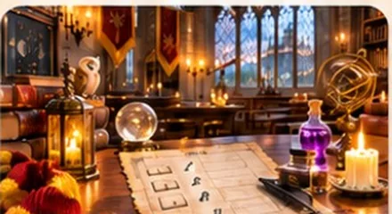
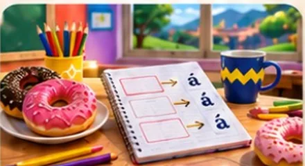
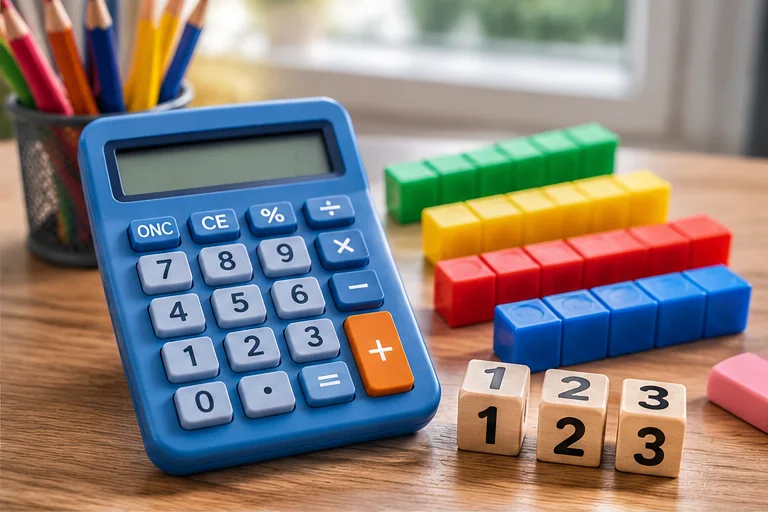

LENGUA
LENGUACrash Bandicoot · sílabas y acentuación
Juego de sílabas y acentuación compartido por el profesor.
Nueve juegos de Lengua y Matemáticas para practicar desde casa. Lengua: prueba el martes 24. Matemáticas: evaluación los días 26, 27 y 30 de noviembre.

Aprende jugando
Pulsa «Jugar ahora». Puedes regresar al menú cuando quieras.
LENGUAJuego de sílabas y acentuación compartido por el profesor.

LENGUA
LENGUAUna aventura interactiva centrada en la acentuación.

LENGUA
LENGUAUn juego de acentuación ambientado en Los Simpsons.
Retos de sumas y restas
Practica con llevadas, resuelve problemas y ordena números. Lee bien cada enunciado y piensa antes de responder.
 MATEMÁTICAS
MATEMÁTICAS
 MATEMÁTICAS
MATEMÁTICAS
 MATEMÁTICAS
MATEMÁTICAS
Para seguir practicando
 Matemáticas · 1
Matemáticas · 1
Matemáticas · 2 Lengua · 1
Lengua · 1 Lengua · 2
Lengua · 2Recursos de semanas anteriores
Actividades creadas para esta web durante los controles anteriores. No forman parte del aviso del 24 de noviembre.
La parte destacada es la sílaba tónica.
Las otras sílabas de la palabra se llaman átonas.
2 sumas y 3 restas con llevadas.